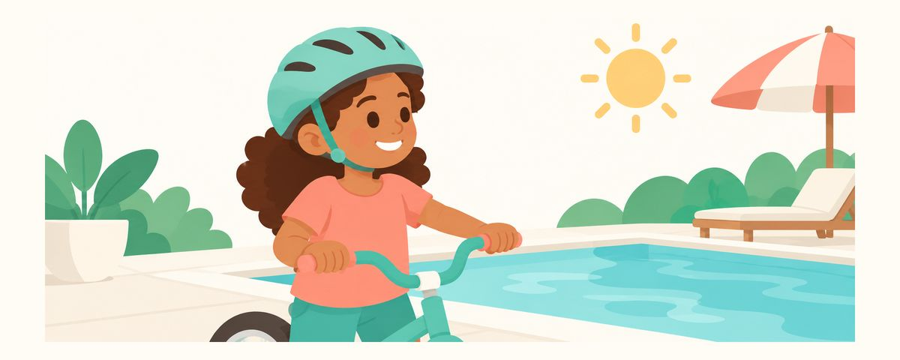

Cedera gigi saat liburan, berenang, dan bersepeda: helm, pelindung mulut, dan pertolongan gigi copot
Saat liburan, makin banyak anak cedera gigi karena bermain air dan bersepeda. Simak alat pelindung, aturan kolam renang, dan langkah segera jika gigi permanen copot.
Sekilas
- Helm untuk sepeda, pelindung mulut untuk olahraga kontak
- Gigi permanen copot? Pegang mahkotanya, bukan akarnya
- Pasang kembali secepatnya agar peluangnya terbaik
Di musim liburan, anak-anak makin banyak bermain di luar dengan gembira, dan makin sering pula mereka cedera. Gigi depan terutama adalah bagian yang paling dulu cedera saat jatuh atau terbentur. Berikut cara mencegahnya sejak awal, dan apa yang harus dilakukan tanpa panik jika gigi telanjur cedera.
Mengapa gigi mudah cedera di musim liburan
Saat liburan dan cuaca panas, banyak permainan yang melaju cepat atau dilakukan di tempat licin, seperti bermain air, bersepeda, naik skuter, dan sepatu roda. Jika anak jatuh tanpa sempat menahan dengan tangan, wajahnya yang lebih dulu terbentur, dan saat itu gigi depan atas yang menonjol mudah cedera. Terpeleset di dasar atau tepi kolam renang lalu membentur gigi depan juga sering terjadi.
Bentuk cedera gigi bermacam-macam. Ujung gigi bisa sedikit gompal, gigi bisa goyang atau terdorong masuk, dan meski jarang, gigi bisa copot seluruhnya. Meski dari luar tampak baik-baik saja, saraf atau akar di dalam gigi bisa saja cedera, jadi setelah cedera sebaiknya diperiksakan ke dokter gigi.
Membuat kesepakatan dengan anak sebelum pergi bermain sangat efektif. Jika disampaikan tepat sebelum bermain, nasihat terdengar seperti omelan. Namun jika aturan singkat seperti "pakai helm, berjalan di kolam renang" disepakati bersama sejak awal, anak pun berusaha mematuhinya. Orang tua yang lebih dulu memakai helm juga menjadi contoh yang baik.
Di antara semua itu, yang paling mendesak adalah saat gigi permanen copot seluruhnya. Makin cepat gigi yang copot dipasang kembali ke tempatnya, makin besar peluang menyelamatkannya, jadi penting mengetahui caranya sejak sekarang dan bertindak tanpa menunda. Meski sudah lewat beberapa waktu, jangan menyerah. Bawa giginya.
Siapkan dari awal, dan lakukan ini saat cedera
Sebelum musim liburan, siapkan hal berikut bersama keluarga.
- Pakai helm saat naik sepeda, skuter, dan sepatu roda.
- Pakai pelindung mulut untuk olahraga yang melibatkan benturan.
- Sepakati untuk tidak berlari di tepi kolam renang.
- Sepakati untuk tidak melompat dengan kepala lebih dulu ke air yang dangkal.
- Atasi haus dengan air putih. Minuman olahraga, soda, dan jus mengandung banyak gula dan asam yang mengikis gigi.
- Simpan nomor dokter gigi Anda di ponsel, dan saat bepergian, cari tahu klinik gigi terdekat sebelumnya.
Jika gigi permanen copot seluruhnya, lakukan urutan ini.
- Temukan gigi yang copot, lalu pegang hanya bagian mahkotanya (bagian putih yang biasa terlihat), jangan sentuh akarnya. Di permukaan akar ada jaringan yang membantu gigi menempel kembali.
- Jika kotor, bilas dengan susu atau larutan saline, atau jika tidak ada keduanya, dengan air sangat sebentar (maksimal 10 detik). Jangan digosok atau dicuci dengan sabun.
- Jika Anda yakin itu gigi permanen dan anak benar-benar sadar serta bisa bekerja sama, langsung pasang kembali dengan lembut ke tempatnya, minta anak menggigit kain bersih atau kain kasa dengan lembut, lalu segera ke dokter gigi.
- Jika sulit dipasang kembali, segera masukkan ke dalam susu (atau larutan saline) dan langsung ke dokter gigi. Jika tidak ada keduanya, air pun lebih baik daripada membiarkannya kering. Jangan dibungkus tisu sampai kering.
Jika gigi yang copot adalah gigi susu, jangan dipasang kembali. Gigi susu yang dipasang kembali bisa melukai gigi permanen yang sedang tumbuh di bawahnya. Jika ragu apakah itu gigi susu atau gigi permanen, jangan memaksa memasangnya. Masukkan gigi ke dalam susu dan segera ke dokter gigi untuk memastikannya.
Kesalahan yang sering dilakukan orang tua adalah menggosok gigi yang copot kuat-kuat agar bersih, atau membungkusnya dengan tisu lalu memasukkannya ke saku. Jika akarnya kering atau rusak, gigi sulit menempel kembali. Ada juga yang tidak ke dokter gigi karena anak tidak menangis atau tidak mengeluh sakit, padahal gigi yang cedera bisa saja rusak di bagian dalam meski luarnya tampak baik.
Pertanyaan yang sering diajukan
Ujung gigi depan hanya gompal sedikit. Apakah harus segera ke dokter gigi?
Gigi yang gompal, goyang, atau bergeser sebaiknya dibawa ke dokter gigi di hari yang sama. Meski gompalnya tampak kecil, bagian dalamnya mungkin perlu diperiksa.
Gigi susu anak copot. Apakah dibiarkan saja?
Gigi susu tidak dipasang kembali, tetapi periksakan ke dokter gigi untuk memastikan gusi di sekitarnya atau gigi permanen di bawahnya tidak cedera.
Anak terbentur keras di kepala saat di kolam renang.
Periksa kondisi kepalanya lebih dulu daripada giginya. Jika anak tampak kurang sadar, muntah, sulit bernapas, atau lemas tidak seperti biasanya, segera bawa ke IGD.
Untuk olahraga apa saja pelindung mulut diperlukan?
Pakailah untuk olahraga yang melibatkan benturan. Pelindung mulut harus pas di mulut anak agar nyaman untuk bernapas dan berbicara, sehingga bisa dipakai lama.
Bawa ke dokter gigi hari itu juga jika
- Gigi permanen copot seluruhnya (makin cepat makin baik)
- Gigi gompal atau retak
- Gigi goyang atau terdorong ke dalam atau ke luar sehingga posisinya berubah
- Setelah cedera, warna gigi berubah atau gusi bengkak dan sakit
- Gigi susu copot karena cedera atau tampak terdorong masuk ke dalam gusi
Dapatkan di waktu yang tepat
Masukkan tanggal lahir anak Anda (atau perkiraan tanggal persalinan) di aplikasi Kalender Gigi, dan artikel-artikel ini akan datang sebagai pengingat tepat saat dibutuhkan. Gratis, tanpa daftar.
Sumber
Informasi dalam artikel ini bersifat edukasi umum dan tidak menggantikan perawatan gigi profesional. Konsultasikan kondisi anak Anda dengan dokter gigi.